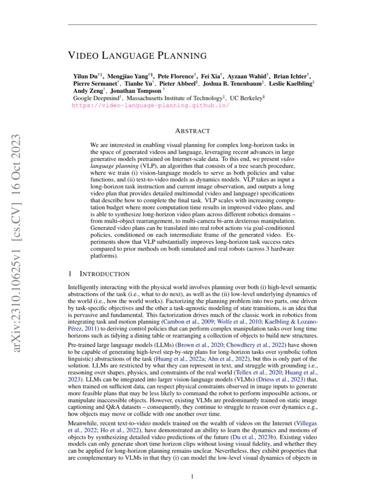
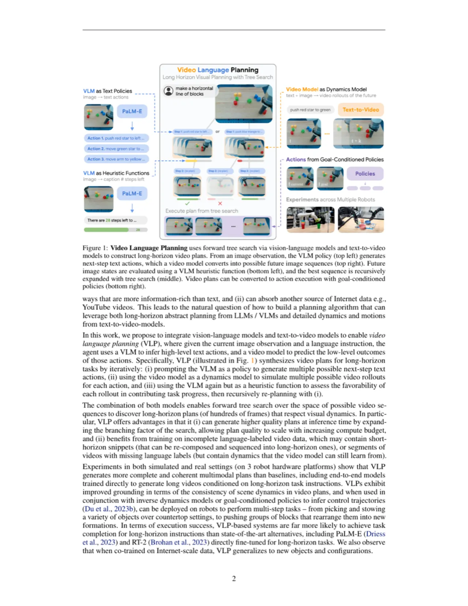
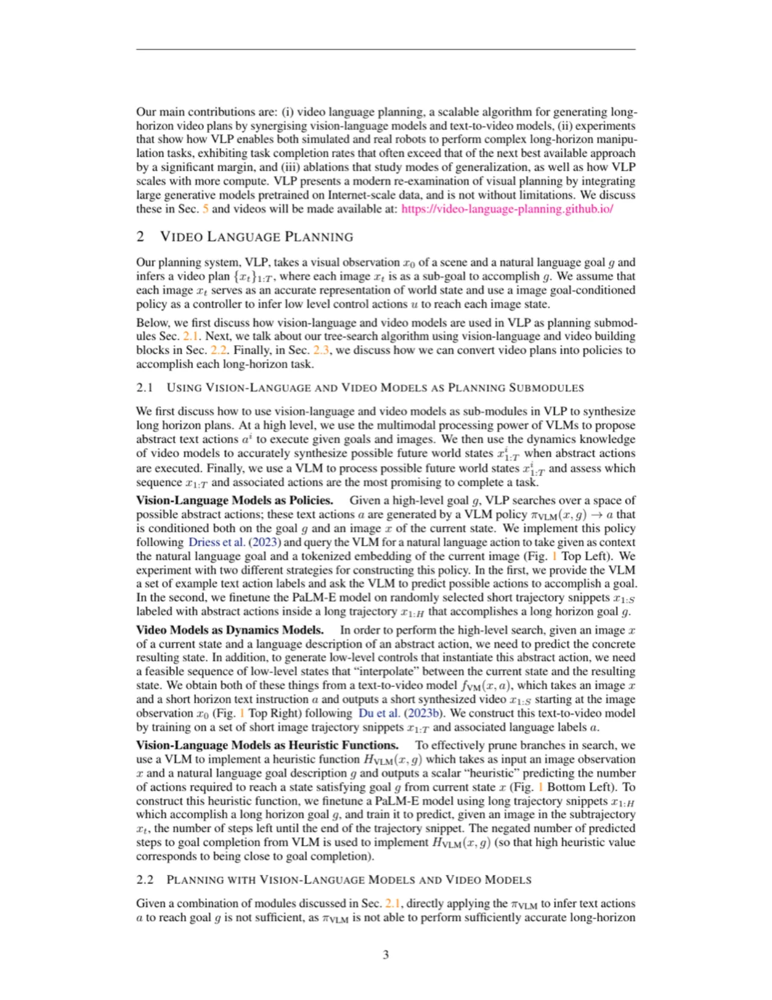
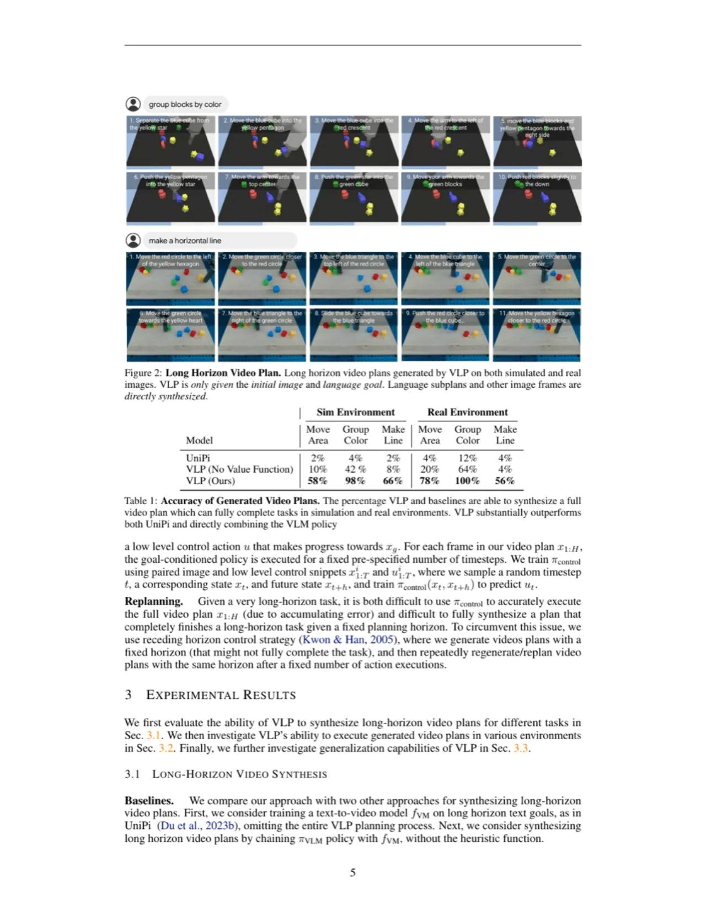
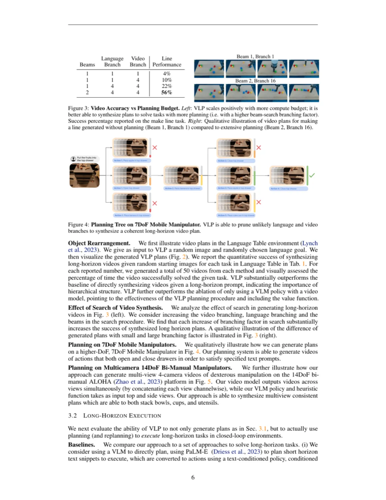

VLP（Video Language Planning）提出将 vision-language model（VLM）与 text-to-video model 组合，通过树搜索在视频与语言构成的联合空间中规划长时序机器人任务。VLM 同时充当策略（生成文字动作）和价值函数（评估视频进度），text-to-video model 充当动力学模型，在推理时以更多算力换取更高质量的视频计划。
长时序机器人操作需要同时具备：（i）对高层语义任务的抽象推理；（ii）对低层物理动力学的准确建模。大语言模型（LLM）和视觉语言模型（VLM）善于高层推理，但局限于文字表达、难以推理物理约束；text-to-video 模型善于捕捉视觉动力学，但只能生成短时域片段。如何将两者结合以实现数百帧级的长时序视觉规划，是本文核心问题。
"We are interested in enabling visual planning for complex long-horizon tasks in the space of generated videos and language, leveraging recent advances in large generative models pretrained on Internet-scale data."

VLP 以三个模块为核心：（1）VLM as Policy——根据当前图像和语言目标生成候选文字动作；（2）Video Model as Dynamics——将文字动作转化为合成的短时视频帧；（3）VLM as Heuristic Function——预测距离目标完成还需多少步，用于剪枝。三者通过树搜索（beam search + parallel hill climbing）组合，在推理时可用更多计算换取更好的视频计划质量。

VLP 使用 PaLM-E 作为 VLM。给定图像 x 和语言目标 g，policy πVLM(x, g) 采样出 A 个候选文字动作 a。heuristic function HVLM(x, g) 在长轨迹片段上微调，输出"距目标还需几步"的标量估计——取负值作为启发值（越接近目标值越大）。为防止动力学模型被"利用"（exploiting model dynamics），若某视频帧的启发值超过固定阈值则直接丢弃。
给定当前帧 x 和文字动作 a，视频模型 fVM(x, a) 合成一段短时视频 x1:S，预测执行该动作后的视觉结果序列。长时计划通过自回归拼接（递归将最后一帧作为新起点）延伸至数百帧。对多相机双臂平台（ALOHA），各视角视频在 channel 维度拼接后联合生成，保证多视角一致性。
初始化 B 条平行规划 beam。每一步：① πVLM 为当前帧生成 A 个动作；② fVM 对每个动作合成 D 个视频分支（共 A×D 个）；③ HVLM 打分，选最高分视频加入当前 beam；④ 每 5 步，用最高分 beam 替换最低分 beam。最终输出 HVLM 得分最高的 beam 对应的视频计划。

给定合成视频计划 x1:H，goal-conditioned policy πcontrol(x, xg) 以当前帧 x 和下一目标帧 xg 为输入，输出低层控制动作 u，每帧执行固定步数。采用 receding horizon control（滚动时域控制）：执行固定步数后，用最新观测重新规划（replanning），以消除累积误差。
实验在 Language Table 仿真环境和对应真实机器人（桌面机械臂）、7DoF 移动机械臂、14DoF 双臂 ALOHA 三个平台上进行。评估分两部分：（i）视频计划合成质量（人工判断视频是否完成任务，各方法各生成 50 条）；（ii）实际执行成功率（reward + completion rate）。
| 方法 | Move Area（Sim） | Group Color（Sim） | Make Line（Sim） | Move Area（Real） | Group Color（Real） | Make Line（Real） |
|---|---|---|---|---|---|---|
| UniPi | 2% | 4% | 2% | 4% | 12% | 4% |
| VLP (No Value Function) | 10% | 42% | 8% | 20% | 64% | 4% |
| VLP (Ours) | 58% | 98% | 66% | 78% | 100% | 56% |
| 方法 | Move Area Reward | Move Area Completion | Group Color Reward | Group Color Completion | Make Line Reward | Make Line Completion |
|---|---|---|---|---|---|---|
| UniPi | 30.8 | 0% | 44.0 | 4% | 44.0 | 4% |
| LAVA | 59.8 | 22% | 50.0 | 2% | 33.5 | 0% |
| RT-2 | 18.5 | 0% | 46.0 | 26% | 36.5 | 2% |
| PaLM-E | 36.5 | 0% | 43.5 | 2% | 26.2 | 0% |
| VLP (Ours) | 87.3 | 64% | 95.8 | 92% | 65.0 | 16% |

规划预算（Table 3）：增加 beam 数（1→2）、规划时域（1→2）、branching factor（4→16），"make line" 任务完成率从 0% 上升至 16%，reward 从 48.9 升至 65.0。搜索力度越大，执行成功率持续提升。
动作提取方式（Table 4）：对比 inverse dynamics / goal policy (last frame) / goal policy (every frame) 三种从视频提取动作的方式。"goal-conditioned policy on every frame"在 Group-by-Color 任务上获得最高 reward（95.8）和最高完成率（92%），超过只用最后一帧的 85.0/66%，说明密集帧级控制更有效。

当 VLM 和 video model 在大规模 Internet 数据（含 YouTube 视频）上联合预训练后，VLP 能够泛化到：（i）训练集中未见过的新物体（如橡皮圈、纸杯蛋糕、木质六边形）；（ii）不同光照条件下的新环境；（iii）新任务指令（如"Pick snicker energy bar"、"Move moose toy near green pear"）。这种泛化能力来自将视频合成与低层控制解耦——video model 负责视觉动力学泛化，goal-conditioned policy 只需泛化到邻近视觉目标。
"Our planning approach leverages images as a world state representation. In many tasks, this is insufficient as it does not capture the full 3D state and cannot encode latent factors such as physics or mass." 论文提出的缓解方向：生成多视角视频，或让 heuristic function 以完整视频为输入。
"we observed that our video dynamics model does not always simulate dynamics accurately. In several situations, we observed that synthesized videos would make objects spontaneously appear or teleport to new locations."（物体凭空出现或瞬移）论文建议使用更大的 video model、更多训练数据、或引入显式强化学习反馈（如 RLHF for physics）来缓解。
VLP 的计划质量随 beam 数和 branching factor 增大而提升，但推理时间也相应增长。在实时机器人控制场景中，需要在计划质量与响应延迟之间做出权衡。（作者在论文中提及此 scaling 特性，但未给出具体推理时延数据，此条为设计层面的隐含局限。）
VLP 的 text-to-video model 需要短时图像轨迹片段与对应语言标签进行监督训练，数据采集与标注成本较高。尽管作者指出 VLP 可从不完整语言标注数据中受益（未标注段仍可用于学习动力学），但对新机器人平台和新任务域的数据需求仍构成实际部署的障碍。